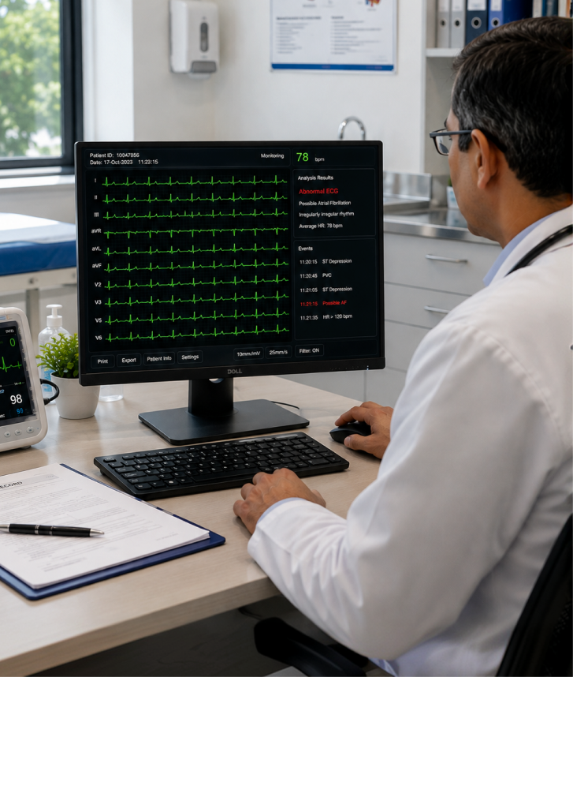
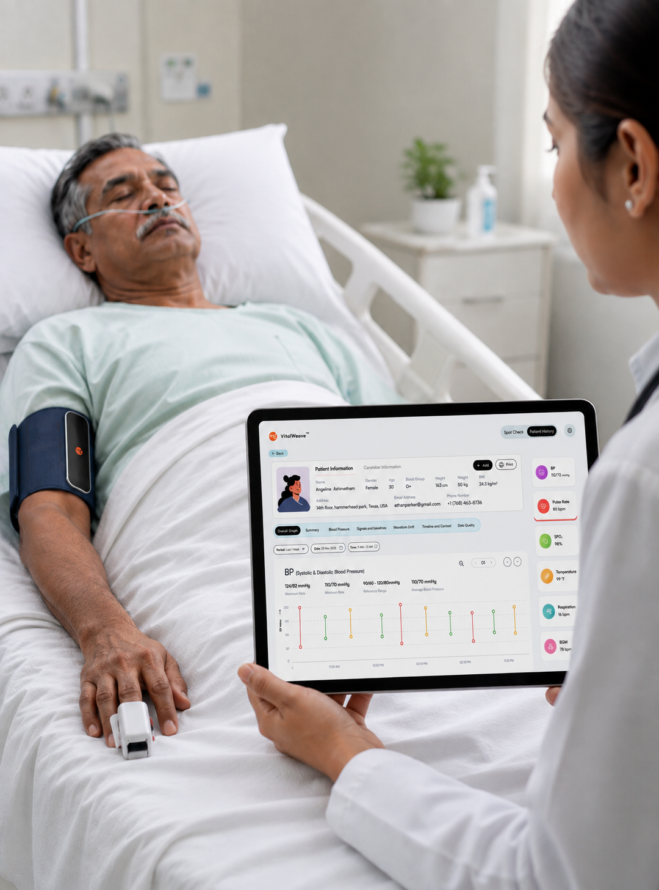

Advancing Patient Care
Through Intelligent
Health Insights
AI/ML & Digital Twin
Monitor heart rhythms continuously with wearable ECG technology and intelligent insights for better cardiac care across every patient monitoring journey.

Proactive Care,
Powered by Intelligence
At MG Health Tech, we combine AI, machine learning, and digital twin technology to help clinicians move from reactive treatment to proactive care. Our platform, VitalWeave™, continuously captures non-invasive patient data over high-speed 5G/6G networks, using AI and machine learning to detect meaningful health changes and surface patient-specific patterns as they emerge.
Understanding
Patient Health in Real Time
Our AI and Digital Twin approach helps create a personalized representation of a patient's physiological state, allowing healthcare teams to better understand changes over time.
Cardiovascular Digital Twin
Create a patient-specific view of cardiovascular health and track changes in heart function over time.

AI-Powered ECG Analysis
Continuously analyze ECG patterns to identify abnormal heart rhythms and important cardiac changes.

Multi-Parameter Health Analysis
Combine multiple health signals to provide a clearer and more complete view of patient health.
Subtle Pattern Detection
Identify meaningful health changes and patterns that may not appear in individual readings.
Smarter Insights,
Better Clinical Collaboration
VitalWeave™ combines AI-powered analysis with expert clinical review, helping specialists work together and make more informed decisions.
Cardiologists
Review ECG and heart health insights, identify abnormal rhythms, and support earlier clinical intervention.
Pulmonologists
Review oxygen levels and breathing patterns to better understand respiratory and cardiovascular changes.
Endocrinologists
Review glucose and other health trends alongside cardiovascular data for a more complete view of patient health.
Advanced Technology
for Better Healthcare
MG Health Tech builds healthcare technology with interoperability, data security, and regional requirements in mind.
Cardiovascular Digital Twins
Create personalized digital models to understand cardiovascular health, track changes, and support more informed clinical decisions.
5G/6G Data Connectivity
Enable fast, continuous transfer of health data from connected medical devices for real-time monitoring and analysis with greater efficiency.
AI-Supported Clinical Decisions
Connect AI-generated insights with cardiologists, pulmonologists, and endocrinologists for collaborative clinical assessment.
Build Better Care Around Continuous
Patient Health Insights
Discover connected VitalWeave monitoring that helps healthcare teams track vital changes, support better decisions, and improve patient care.